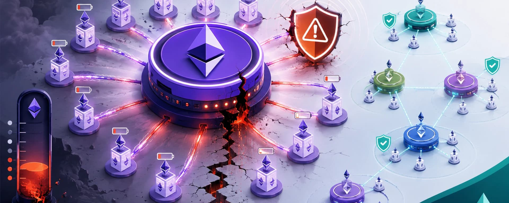

Many stakers don’t understand the full risks of staking with a supermajority client on Ethereum such as Geth. This piece explains how stakers currently running Geth are at risk of losing up to 100% of their stake.
Introduction
This week the Ethereum network witnessed another one of its execution clients, Nethermind, experience a bug that took all validators running Nethermind (~10% of the network) offline.
This was a minor event because Nethermind is run by a minority of stakers. The following is a graph of the total balance of one of my own validators that runs Nethermind. You can see that around 4am local time, the validator went offline when the bug first took place. The team released a patch ~4 hours later and by the time I installed it, the validator was back up and running around 9am local time. During this time, my validator was penalised at the same rate as what it earned rewards at. By 1pm on the same day, the validator balance was higher than it was before the outage. Overall a very minor inconvenience.

Many incorrectly assume that when running Geth, if a similar bug were to occur, the penalty would be similar. This is not true. This has nothing to do with Geth or the way Geth has been built but everything to do with how many people are running Geth.
According to ClientDiversity.org ~84% of all validators on Ethereum are running Geth. Now in these staker's defence, Geth is unarguably the best and most stable client. Whilst minority clients, like Nethermind this week, have been plagued with bugs and downtime, Geth has run faultlessly since the Merge (and long before). In my own experience, I have found higher resource requirements and more missed attestations on my validators when switching from Geth to a minority client.
This article is not an attack on Geth. I have the utmost respect for their team. Unfortunately, through no fault of the Geth team because of how widely used Geth is we need to have honest conversations about the risks of running Geth when it holds a supermajority of stake.

Nobody wants to move away from Geth if they know they are more likely to experience more missed attestations and more downtime, especially those whose business model depends on uptime to advertise the highest yield, such as professional staking operators.
As of September last year, it is estimated that Lido, the largest stake operator, runs ~76% of their validators on Geth.

But I'm glad I'm running a minority client, even if I'm losing a few extra rewards here and there, not because I'm altruistic and am sacrificing a personal gain for the good of the decentralisation of the network, but because I know that my precious ETH is safe from a supermajority bug.
So what actually happens if there's a bug in Geth?
Well, it depends on the bug.
Because more than ⅔ of the validators on Ethereum run Geth, any critical bug in Geth will instantly stop the chain from finalising. This doesn't actually mean that the chain stops or halts. So long as the other clients are still running, the chain will keep chugging along. ~84% of the blocks will be missed, meaning that instead of ~12s block times, a new block will be proposed every ~75s. These blocks will be susceptible to a reorg and therefore transactions included in these blocks are not guaranteed to still be there when the chain finalises again. This sounds bad but let's remember that for years Ethereum pre-merge never had a concept of finalisation and nor does Bitcoin today – which is why exchanges make you wait 6+ block confirmations for deposits to reduce the risk of a reorg occurring and losing the funds.
Some may recall that this already happened to Ethereum in May 2023 when there was a bug in some of the consensus clients. The chain stopped finalising twice over two days, leading to many missed blocks with at one stage just 40% of the network still operating. The network recovered and most DApp users didn't notice anything except slightly slower block confirmations for their transactions.

But what happens to the validators?
The inactivity leak
When a minority client fails, the penalty is losing ETH at the same rate as you gained it (as you can see in the graph of my validator above) but if Geth fails, because it instantly stops the chain from finalising, the penalty is much harsher. This increased penalty is called the inactivity leak and is applied to offline validators when the chain stops finalising for 4 epochs (~25 minutes) or more. This harsher penalty is designed to encourage offline validators to get back online as quickly as possible, or in the worst-case scenario, burn the offline validators' stake until they represent < ⅓ of the total stake allowing the online validators to finalise the chain.

During an inactivity leak, it would take a validator being down for just 2 days to lose 0.6% of their stake, or the equivalent of 2 months' worth of staking rewards!
It would take just 5 days of being offline to wipe out an entire year's worth (3.5%) of staking rewards! Meaning it would take more than 2 full years of staking just to recover back the balance the validator had before the incident.
10% of the stake, or 3 years' worth of rewards, would be lost within 1 week of being offline. 50% of the stake would be lost within ~20 days and 90% within ~40 days.
Comparatively, a validator taken offline due to a minority client bug that does not stop the chain from finalising would lose just 0.4% of its stake in 40 days.
How long would the inactivity penalties last?
It depends on the bug.
If the bug can be patched, the penalties will last as long as it takes for the Geth team to patch the bug and for you to apply it to your validator (or the time required to switch to another execution client).
Realistically we could expect this to be resolved within a few hours or at most a few days. If the bug took the same time to fix as the recent Nethermind incident, validators would lose 0.004% of their stake – nothing major.
Where things get bad is if the bug results in a validator producing an invalid block, and Geth accepts it as valid and attests to it. This will result in a fork in the chain. The chain will split into 1 fork with the invalid block (Geth chain) and another fork where the invalid block is ignored (non-Geth chain). The validators running Geth will consider both forks valid and therefore will decide to build on the heaviest chain. 84% of the validators will attest their stake to the Geth chain and just 16% of validators will attest their stake to the non-Geth chain. Thus the Geth validators will pick the Geth chain as the heaviest and continue building on it.

Now of course the blocks on the Geth chain will be orphaned (which will cause its own issues) once all of this is resolved but the much larger issue is that the Geth chain will have enough stake (>⅔) to finalise the invalid chain.
Once the Geth chain finalises, if a validator has attested to the Geth chain, it cannot take part in the non-Geth chain (until the non-Geth chain is also finalised), without being slashed. In essence, the validators running Geth have committed to the invalid chain and are locked into that chain until the non-Geth chain finalises. This is the critical risk that many misunderstand.
Because the Geth validators are stuck on the invalid chain, they are considered inactive on the non-Geth chain and will suffer the inactivity leak. No software update or bug patch to Geth will save these validators. They will be bled out until their stake represents < ⅓ of the network, allowing the non-Geth chain to finalise.
There is currently 28,976,695 ETH at stake on the network. 84% of this (~24m ETH) can be attributed to validators running Geth and 16% (~5m ETH) for validators not running Geth. For the non-Geth chain to finalise, the validators running Geth need to have their stake burned until it represents less than ⅓ of the remaining total stake. This means ~21.5m ETH would need to be burned from these validators (~90% of their stake), reducing the Geth stake to ~2.5m ETH representing < ⅓ of the ~7.5m total ETH at stake (2.5m + 5m ETH). The ~5m ETH controlled by the non-Geth validators would now represent > ⅔ stake allowing them to finalise the chain.
This would be an excruciatingly painful process that would play out over ~40 days. It would be so significant that it would reduce the total supply of all ETH by ~18% bringing the total supply below 100m ETH (…making ETH ultrasound …in the worst way possible).

Race for the exit
One important point here is that it's unlikely that validators on the invalid chain would sit around doing nothing. They still have the option to withdraw their stake and if they don't, the network will force eject them anyway when their effective balance reaches 16 ETH. But this does not mean that their downside is limited to 16 ETH.
When you exit a validator (even when force ejected) you go into the exit queue and while you are in the exit queue you will still leak ETH!
We know that in a worst-case scenario, it will take ~40 days for the inactivity leak to allow the valid chain to start finalising again. So how long does the exit queue take?
The exit queue has a churn limit that limits how many validators can exit the network each epoch (~6.4 minutes). The churn limit is defined as follows:

With a current exit rate of 13 validators every 6.4 minutes, if every validator running Geth wanted to exit it would take at minimum ~260 days for all the validators to exit. Given that 90% of the stake will be wiped out within ~40 days, most validators' balance will be long exhausted before they can exit the chain.
Just the first 2% of Geth validators to initiate an exit would get out in the first 5 days, losing out a maximum of ~1 year's worth of staking rewards.
You would need to be in the first 3% of validators to exit to keep your loss below 10% of your stake.
Only the first 8% of validators to exit will keep their loss below 50% of their stake. At this point, anyone who hasn't manually initiated an exit will be force-ejected and added to the exit queue for having an effective balance of 16 ETH.
Over 85% of validators will still be in the queue after 40 days when 90% of their stake has been wiped out.
The ability to exit will not save you and your downside is not limited to the point at which you are force-ejected (16 ETH).
What about slashing?
Some people mistakenly assume that stakers running Geth, in the event of a bug, could not just suffer an inactivity leak but also get slashed. This is not true.
Slashing penalties only apply to double-signing events which are solely controlled by the consensus client. It should not be possible for a bug in Geth to cause the consensus client to commit a slashable offence. Geth producing an invalid block is not a slashable offence.
Only the inactivity leak penalty will apply to a Geth bug.
What should you do?
Those stakers running Geth today likely don't fully understand the risk associated with running a supermajority execution client. Many incorrectly assume that in the event of a bug, a patch will be released in a few hours that will solve the issue, losing very little ETH in the process.
Many are not aware of the risk of attesting an invalid block which locks you into the invalid finalised chain, all but guaranteeing a majority of your ETH being burned. This is a real risk that has the potential to materialise.
Staked ETH is not risk-free yield. Would you invest a minimum of $75,000 USD into an instrument where the maximum potential gain is 3.5% p.a. but the potential for loss is 100% (even if that loss is unlikely)? Probably not, but this is what 84% of the Ethereum stakers are doing today.
By switching to a minority client (assuming the same bug is not present across multiple clients) you can limit your maximum possible loss to 3.5% p.a..
With this knowledge, it seems crazy that anyone is still running Geth whilst it holds a supermajority. I can only assume that those running Geth don't fully understand this risk.
Please share this article to help educate the ecosystem on the risks of running a supermajority client.
If you are running a validator with Geth, switch today!
If you hold an LST (e.g. stETH, cbETH, etc…) and the LST runs Geth on their validators, understand that your ETH is at risk and consider unstaking or switching to another LST until Geth no longer has a supermajority.